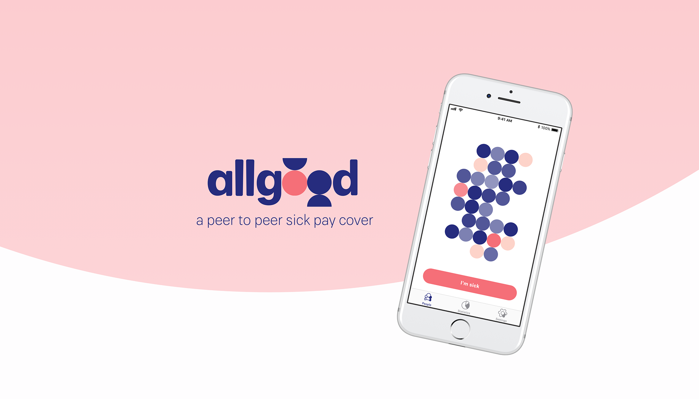
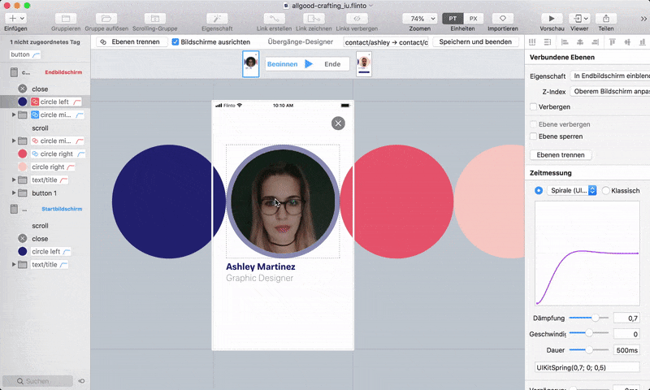

About 16% of all European labor is already freelance, but traditional safeguards for times of sickness or injuries fall short for the self-employed.

An app that builds and maintains a small, trusted community of freelancers whose solidarity covers for each other in times they are sick and unable to work.

My work: Concept, ux design, ui design, prototyping, user research
Together with: Donatus Wolf, Marius Wies